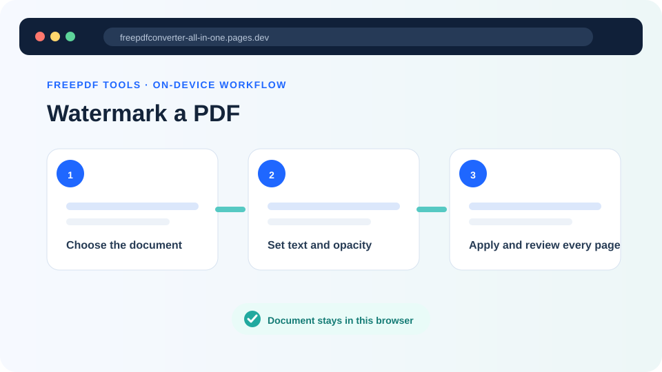
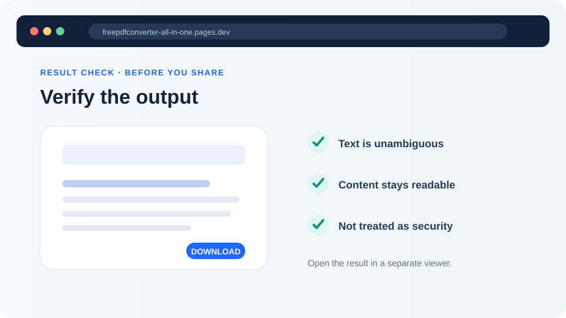

How to add a watermark to PDF documents clearly
Place a visible text label on every page without making the document difficult to read.
Updated August 11, 2026 · By FreePDF Tools · 5 minute read


What is a PDF watermark for?
A visible watermark communicates status, ownership context or handling instructions. Useful examples include DRAFT, CONFIDENTIAL, SAMPLE, INTERNAL USE or a short project reference. The message should be clear to a reader who sees only one page separated from the rest of the document.
Avoid long sentences, private contact details or text that covers essential information. If the document will be printed, check a sample page because a colour that looks subtle on screen can appear much lighter or darker on paper.
Choose wording, size, opacity and angle
| Setting | Practical recommendation |
|---|---|
| Text | Use a short label that remains meaningful on every page; the tool accepts up to 100 characters. |
| Size | Start near the default and reduce it when a long label would run beyond the page edges. |
| Opacity | Begin with Light. Increase it only if the label is difficult to see. |
| Angle | A diagonal angle works across portrait and landscape pages; horizontal text suits header-like labels. |
| Colour | Choose enough contrast to be visible while keeping underlying text readable. |
How to add a text watermark to every PDF page
- Open the Watermark PDF tool and select your PDF.
- Enter the watermark text.
- Choose the text size, opacity, angle and colour.
- Select Add watermark and keep the tab open while every page is processed.
- Open the downloaded file and inspect pages with both light and dark content.
Add a visible PDF label
Apply your chosen text to every page locally in the browser.
A watermark is not encryption or access control
A visible watermark can discourage casual reuse and communicate intended handling, but it does not prevent opening, copying, printing or editing the PDF. It is not digital rights management, password protection or a digital signature. Anyone with suitable editing software may be able to alter or remove visible page content.
For truly restricted documents, use appropriate organisational controls, encryption and approved sharing systems. If a document is already digitally signed, do not watermark that signed copy: changing page content can invalidate the signature. Preserve the original and apply any label before the signing stage.
Readability and accessibility
A very dark watermark can reduce contrast for people reading small text or using screen magnification. Keep opacity modest and test dense pages, charts and forms. Visible watermarks are graphical page content; do not rely on them as the only way to communicate important instructions that assistive technology must expose.
Common watermark problems
| Problem | What to try |
|---|---|
| The text hides document content | Reduce opacity or font size and choose a lighter colour. |
| The label runs off the page | Use shorter wording or a smaller text size. |
| The watermark is hard to see | Increase opacity slightly and choose a colour that contrasts with the page. |
| Different page sizes look inconsistent | Choose a shorter diagonal label that works on both portrait and landscape pages. |
| The PDF cannot be loaded | Check whether it is encrypted or damaged by opening it in a trusted reader. |
Privacy and document handling
The PDF is read and watermarked locally in the browser; it is not uploaded to our application server for this operation. The finished copy is saved to your usual Downloads location, so move or remove it according to your organisation's document-handling rules.